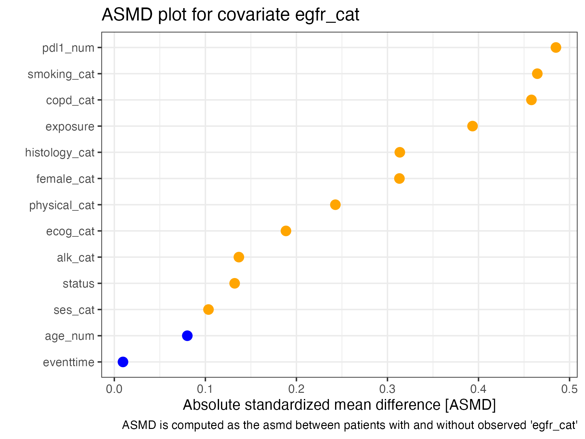
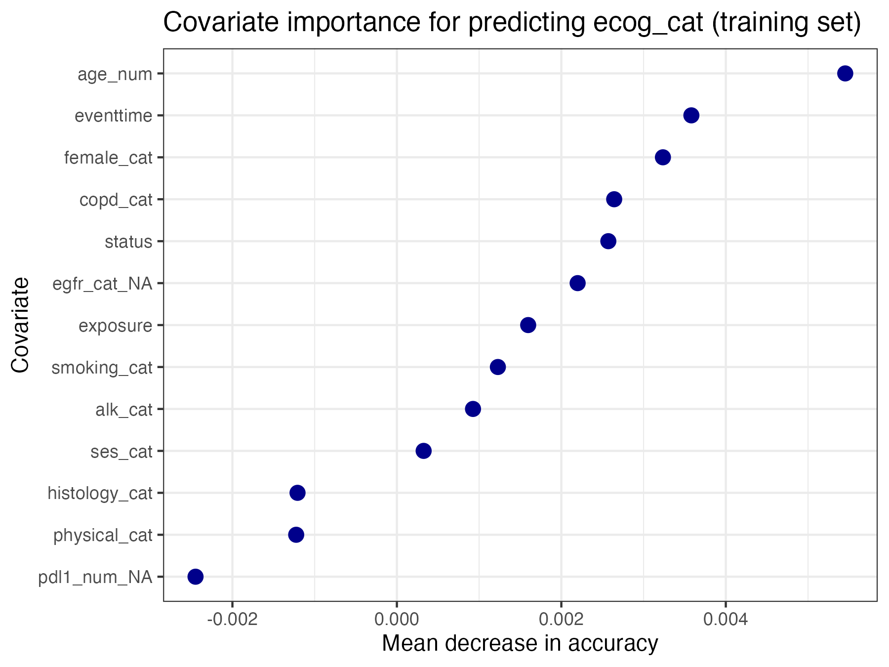

Routine structural missing data diagnostics
Janick Weberpals
routine_diagnostics.Rmd
smdi main functionalities
The smdi flagship function is
smdi_diagnose() which calls multiple sub-functions which
are also accessible separately. This article aims to give an
introduction to missing covariate data diagnostics using the individual
smdi diagnostics function that all funnel into the main
function smdi_diagnose().
What is smdi about? Large-scale simulations revealed characteristic patterns of the diagnostic parameters matched to missing data structure based on three group diagnostics:

Overview three group diagnostics
How can this be applied to inform a real-world database study? The observed diagnostic patterns of a specific study will give insights into the likelihood of underlying missingness structures. This package enables researchers to create these three group diagnostics for their own healthcare database analytics with little effort. This is how an example could look like in a real-world database study:
Example of how smdi diagnostics can be applied to give
insights into the likelihood of underlying missingness structures in a
real-world database study.
Illustrative dataset
To illustrate the usage of the smdi package main
functions, we use the smdi_data dataset which is an example
dataset that comes bundled with the package and includes some ready to
use simulated partially observed covariates. If you prefer to simulate
missingness yourself, you can do so using the
smdi_data_complete dataset.
In brief, the smdi_data dataset consists of a simulated
lung cancer cohort with a fictional comparison of two antineoplastic
systemic therapy regimens and a time-to-event outcome. More information
on the underlying dataset is given in the previous Data
generation article.
smdi_data %>%
dplyr::glimpse()
#> Rows: 2,500
#> Columns: 14
#> $ exposure <int> 1, 1, 0, 1, 1, 0, 1, 0, 1, 1, 0, 1, 1, 0, 0, 1, 1, 0, 0,…
#> $ age_num <dbl> 35.24, 51.18, 88.17, 50.79, 40.52, 64.57, 73.58, 42.38, …
#> $ female_cat <fct> 1, 0, 0, 0, 0, 0, 0, 1, 1, 1, 1, 0, 0, 1, 0, 0, 1, 1, 1,…
#> $ smoking_cat <fct> 1, 1, 0, 1, 1, 0, 1, 1, 1, 0, 0, 1, 1, 1, 1, 0, 1, 0, 1,…
#> $ physical_cat <fct> 0, 1, 0, 0, 0, 0, 0, 0, 1, 0, 0, 0, 0, 0, 1, 0, 1, 0, 0,…
#> $ alk_cat <fct> 0, 0, 0, 0, 0, 0, 0, 0, 0, 0, 0, 0, 0, 0, 0, 0, 0, 0, 0,…
#> $ histology_cat <fct> 1, 1, 0, 0, 0, 0, 0, 0, 0, 0, 0, 1, 0, 0, 0, 0, 1, 0, 0,…
#> $ ses_cat <fct> 2_middle, 3_high, 2_middle, 2_middle, 2_middle, 2_middle…
#> $ copd_cat <fct> 1, 0, 1, 1, 1, 0, 1, 1, 1, 1, 0, 1, 1, 1, 1, 0, 1, 0, 1,…
#> $ eventtime <dbl> 5.000000000, 4.754220474, 0.253391563, 5.000000000, 5.00…
#> $ status <int> 0, 1, 1, 0, 0, 1, 1, 0, 1, 1, 1, 1, 1, 1, 1, 0, 0, 1, 1,…
#> $ ecog_cat <fct> 1, NA, 0, 1, NA, 0, 1, 0, 1, NA, 1, NA, NA, 1, 1, 0, 1, …
#> $ egfr_cat <fct> NA, 0, 1, NA, 1, NA, NA, 0, NA, 0, 1, NA, 0, NA, NA, 0, …
#> $ pdl1_num <dbl> 45.03, NA, 41.74, 45.51, 31.28, NA, 47.28, 37.28, 46.47,…The dataset consists of 2,500 patients and 14 variables with
exposure representing the two treatment regimens under
comparison and status and eventtime the vital
status and censoring time, respectively. For more information, please
checkout:
# dataset with simulated missingness
?smdi::smdi_data()
# complete dataset
?smdi::smdi_data_complete()Descriptives
Missingness proportions
As with basically any first step into exploring (new) datasets, it’s
a good idea to get an overview of partially observed covariates and the
magnitude of missingness. For this smdi comes with two
convenient functions to screen the data for missingness.
This can be either as a table …
smdi_data %>%
smdi_summarize()
#> # A tibble: 3 × 4
#> covariate n_miss prop_miss prop_miss_label
#> <chr> <int> <dbl> <chr>
#> 1 egfr_cat 1015 40.6 40.60%
#> 2 ecog_cat 899 36.0 35.96%
#> 3 pdl1_num 517 20.7 20.68%… or visually
covars_missing <- smdi_summarize(data = smdi_data) %>%
pull(covariate)
smdi_data %>%
smdi_vis(covar = covars_missing)The plot also provides flexibility to stratify, e.g. by
exposure.

Missingness patterns
Besides describing the proportion missingness by covariate (and
potentially stratified by another variable), it is also of great
importance to check the missingness patterns. This can give important
hints if the missingness in two or more partially observed covariates
may follow a monotone or non-monotone missingness pattern. If former is
the case, one should be careful and potentially run the below-described
smdi diagnostics variable-by-variable instead of
jointly.
We recommend checking both missingness proportions and patterns as a first step. In case of monotonocity, the
smdipackage may likely culminate in misleading results. Please check the article on multivariate missingness and monotonicity.
To check missingness patterns, the smdi comes with
re-exports of the naniar::gg_miss_upset and
mice::md.pattern functions.
Upset plot
smdi::gg_miss_upset(data = smdi_data)
The upset plot and the pattern matrix show that only a small fraction of observations (N = 97) is missing in all the partially observed covariates at the same. A non-monotone missingness pattern is consequently more likely than a monotone one.
Pattern matrix
smdi::md.pattern(smdi_data[, c(covars_missing)], plot = FALSE)
#> pdl1_num ecog_cat egfr_cat
#> 795 1 1 1 0
#> 479 1 1 0 1
#> 446 1 0 1 1
#> 263 1 0 0 2
#> 151 0 1 1 1
#> 176 0 1 0 2
#> 93 0 0 1 2
#> 97 0 0 0 3
#> 517 899 1015 2431Before we are getting started: data format
Generally, the dataframe(s) used for smdi (defined as
the data parameter in all functions) should consist of the
partially observed covariates, other relevant observed covariates as
well as the the exposure and outcome variables. Avoid having
meta-variables such as e.g. ID variables, dates and zip codes in your
dataframe as all present columns in your dataframe will be used to make
inferences about potential missing data mechanisms.
Group 1 diagnostics: differences in covariate distributions
Median/average absolute standardized mean differences
As discussed in the documentation of the smdi_asmd and
smdi_hotelling, the median/average standardized mean
difference (asmd) may be one indicator as to how much patient
characteristics differ between patients with and without an observed
value for a partially observed covariate. If the median/average asmd is
above a certain threshold this may indicate imbalance in patient
covariate distributions which may be indicative of the partially
observed covariate following a missing at random (MAR) mechanims,
i.e. the missingness is explainable by other observed covariates.
Similarly, no imbalance between observed covariates may be indicative
that missingness cannot be explained with observed covariates and the
underlying missingness mechanism may be completely at random (MCAR) or
not at random (e.g. missingness is only associated with unobserved
factors or through the partially observed covariate itself).
To get an idea about the asmd for our partially observed covariates
we can run the smdi_asmd function. We are ok with the
default parameters (i.e. we let the function investigate all covariates
with at least one NA [covar = NULL], compute the median asmd [median =
TRUE] and don’t explicitly model the missingness of other partially
observed covariates [includeNA = FALSE]).
asmd <- smdi_asmd(data = smdi_data)The output returns an asmd object that contains a lot of information in the following structure that can be accessed using the “$” operator:
- asmd
- covar
- covariate modeled
- complete table 1
- asmd plot
- aggregate median/average asmd
- covar
Here is an example of egfr_cat:
asmd$egfr_cat$asmd_table1
#> Stratified by egfr_cat_NA
#> 0 1 p test SMD
#> n " 1485" " 1015" "" "" ""
#> exposure (mean (SD)) " 0.32 (0.47)" " 0.51 (0.50)" "<0.001" "" " 0.393"
#> age_num (mean (SD)) "60.44 (13.80)" "61.58 (14.61)" " 0.048" "" " 0.080"
#> female_cat = 1 (%) " 457 (30.8) " " 465 (45.8) " "<0.001" "" " 0.313"
#> smoking_cat = 1 (%) " 608 (40.9) " " 645 (63.5) " "<0.001" "" " 0.465"
#> physical_cat = 1 (%) " 454 (30.6) " " 428 (42.2) " "<0.001" "" " 0.243"
#> alk_cat = 1 (%) " 27 ( 1.8) " " 42 ( 4.1) " " 0.001" "" " 0.137"
#> histology_cat = 1 (%) " 225 (15.2) " " 283 (27.9) " "<0.001" "" " 0.314"
#> ses_cat (%) " " " " " 0.039" "" " 0.103"
#> 1_low " 287 (19.3) " " 237 (23.3) " "" "" ""
#> 2_middle " 596 (40.1) " " 373 (36.7) " "" "" ""
#> 3_high " 602 (40.5) " " 405 (39.9) " "" "" ""
#> copd_cat = 1 (%) " 661 (44.5) " " 677 (66.7) " "<0.001" "" " 0.458"
#> eventtime (mean (SD)) " 2.17 (1.86)" " 2.15 (1.76)" " 0.816" "" " 0.010"
#> status (mean (SD)) " 0.79 (0.41)" " 0.84 (0.37)" " 0.001" "" " 0.132"
#> ecog_cat = 1 (%) " 539 (57.0) " " 433 (66.1) " "<0.001" "" " 0.189"
#> pdl1_num (mean (SD)) "44.07 (10.37)" "49.33 (11.31)" "<0.001" "" " 0.485"
asmd$egfr_cat$asmd_plot
asmd$egfr_cat$asmd_aggregate
#> # A tibble: 1 × 4
#> covariate asmd_median asmd_min asmd_max
#> <chr> <chr> <chr> <chr>
#> 1 egfr_cat 0.243 0.010 0.485To limit the output, we can use the generic print or
summary output of the object which returns a summary table
of the aggregate median/average asmd per covariate.
summary(asmd)
#> # A tibble: 3 × 4
#> covariate asmd_median asmd_min asmd_max
#> * <chr> <chr> <chr> <chr>
#> 1 ecog_cat 0.029 0.003 0.071
#> 2 egfr_cat 0.243 0.010 0.485
#> 3 pdl1_num 0.062 0.019 0.338Hotelling’s and Little’s hypothesis tests
Hotteling
The smdi_hotelling function follows the same logic, but
is a formal hypothesis test for the difference in covariate
distributions based on a multivariate student t-test.1 The output (a
hotteling object) follows the same structure as above. It’s important to
remember that the power of statistical hypothesis tests can be
influenced by sample size, so the combined investigation along with
smdi_asmd() is highly recommended.
- hotelling
- covar
- Hotelling test statistics
- covar
h0 <- smdi_hotelling(data = smdi_data)
h0
#> covariate hotteling_p
#> 1 ecog_cat 0.783
#> 2 egfr_cat <.001
#> 3 pdl1_num <.001More details can be accessed for each covariate.
h0$ecog_cat
#> Test stat: 9.7519
#> Numerator df: 14
#> Denominator df: 2485
#> P-value: 0.7834Little
Little proposes a single global test statistic for MCAR that uses all
of the available data.2 Hence, the smdi_little does
not return one test statistic per partially observed covariate but one
globally for the entire dataset.
h0_global <- smdi_little(data = smdi_data)
h0_global
#> $statistic
#> [1] 801.0009
#>
#> $df
#> [1] 86
#>
#> $p.value
#> [1] 0
#>
#> $missing.patterns
#> [1] 8
#>
#> attr(,"class")
#> [1] "little"
#> attr(,"row.names")
#> [1] 1CAVE: Hotelling’s and Little’s show high susceptibility with large sample sizes and it is recommended to always interpret the results along with the other diagnostics.
Group 2 diagnostics: ability to predict missingness
Since MAR mechanisms are defined as the missingness being a function of observed covariates, MAR may be predictable and evaluable by fitting a classification model e.g. random forest, which would yield moderate to high area under the curve (AUC) values in the case of MAR.
The smdi_rf function trains and fits a random forest
model to assess the ability to predict missingness for the specified
covariate(s). If missing indicator can be predicted as a function of
observed covariates.
CAVE: Depending on the amount of data (sample size x covariates), the computation of the function can take some minutes.
The structure of the output again follows the general schema.
- rf
- covar
- rf_table (AUC)
- rf_plot (variable importance)
- covar
auc <- smdi_rf(data = smdi_data)
auc$ecog_cat$rf_table
#> # A tibble: 1 × 2
#> covariate rf_auc
#> <chr> <chr>
#> 1 ecog_cat 0.510
auc$ecog_cat$rf_plot
CAVE: If the missingness indicator variables of other partially observed covariates (indicated by suffix _NA) have an extremely high variable importance (combined with an unusually high AUC), this might be an indicator of a monotone missing data pattern. That is, the missingness in one covariate is highly predictive of the missingness of another partially observed covariate. In this case it is advisable to exclude other partially observed covariates and run missingness diagnostics separately. This can be checked, e.g. with the
mice::md.pattern()function (micepackage).
Group 3 diagnostics: association between missingness and outcome
The group 3 diagnostic focuses on assessing the association between the missing indicator of the partially observed covar and the outcome under study. This may reveal important covariate relationships with the outcome and could give additional pieces of information.
Currently, the main types of outcome regressions are supported,
namely logistic (glm), linear (lm) and Cox
proportional hazards (survival) models are supported and need
to be specified using the model and form_lhs. For more details, see the
smdi_outcome function documentation via
?smdi::smdi_outcome()The output of smdi_outcome returns a table of the crude
and adjusted beta coefficients and 95% confidence intervals for all
covar.
smdi_outcome(
data = smdi_data,
model = "cox",
form_lhs = "Surv(eventtime, status)"
)
#> # A tibble: 3 × 3
#> covariate estimate_crude estimate_adjusted
#> <chr> <glue> <glue>
#> 1 ecog_cat -0.06 (95% CI -0.16, 0.03) -0.06 (95% CI -0.16, 0.03)
#> 2 egfr_cat 0.06 (95% CI -0.03, 0.15) -0.01 (95% CI -0.10, 0.09)
#> 3 pdl1_num 0.12 (95% CI 0.01, 0.23) 0.11 (95% CI -0.00, 0.22)
smdi_diagnose() - one function to rule them all
Finally, all of the functions above funnel into
smdi_diagnose() which outputs an smdi object including a
summary table of all three smdi group diagnostics and little’s global
p-value statistic. If details of the individual functions above are
needed, this method may not be preferable but is a convenient way to
implement routine structural missing covariate diagnostics by calling a
single function.
Note that all parameters of the individual functions that make up
smdi_diagnose() can be specified and will be passed on but
only the required parameter must be specified. A most minimal example
could look like this.
diagnostics <- smdi_diagnose(
data = smdi_data,
covar = NULL, # NULL includes all covariates with at least one NA
model = "cox",
form_lhs = "Surv(eventtime, status)"
)The output returns two parts: the smdi_tbl which can be
called using the $ operator and looks like this
diagnostics$smdi_tbl
#> # A tibble: 3 × 6
#> covariate asmd_median_min_max hotteling_p rf_auc estimate_crude estim…¹
#> <chr> <chr> <chr> <chr> <glue> <glue>
#> 1 ecog_cat 0.029 (0.003, 0.071) 0.783 0.510 -0.06 (95% CI -0.16… -0.06 …
#> 2 egfr_cat 0.243 (0.010, 0.485) <.001 0.629 0.06 (95% CI -0.03,… -0.01 …
#> 3 pdl1_num 0.062 (0.019, 0.338) <.001 0.516 0.12 (95% CI 0.01, … 0.11 (…
#> # … with abbreviated variable name ¹estimate_adjusted… and the p-value of the global Little’s test statistic:
diagnostics$p_little
#> p_little: <.001Publication-ready gt-style table
For a nicely formatted and publication-ready output we can
subsequently use the smdi_diagnose output and feed it into
the smdi_gt_style() function:
library(gt)
smdi_style_gt(diagnostics)| Covariate | ASMD (min/max)1 | p Hotelling1 | AUC2 | β crude (95% CI)3 | β (95% CI)3 |
|---|---|---|---|---|---|
| ecog_cat | 0.029 (0.003, 0.071) | 0.783 | 0.510 | -0.06 (95% CI -0.16, 0.03) | -0.06 (95% CI -0.16, 0.03) |
| egfr_cat | 0.243 (0.010, 0.485) | <.001 | 0.629 | 0.06 (95% CI -0.03, 0.15) | -0.01 (95% CI -0.10, 0.09) |
| pdl1_num | 0.062 (0.019, 0.338) | <.001 | 0.516 | 0.12 (95% CI 0.01, 0.23) | 0.11 (95% CI -0.00, 0.22) |
| p little: <.001, Abbreviations: ASMD = Median absolute standardized mean difference across all covariates, AUC = Area under the curve, β = beta coefficient, CI = Confidence interval, max = Maximum, min = Minimum | |||||
| 1 Group 1 diagnostic: Differences in patient characteristics between patients with and without covariate | |||||
| 2 Group 2 diagnostic: Ability to predict missingness | |||||
| 3 Group 3 diagnostic: Assessment if missingness is associated with the outcome (crude, adjusted) | |||||
smdi table export
To make this even more convenient, gt offers a
functionality to export the table in different formats,
e.g. .docx, .png, .pdf or
.rtf:
gtsave(
data = smdi_style_gt(diagnostics),
filename = "smdi_table.docx", # name of the final .docx file
path = "." # path where the file should be stored
)